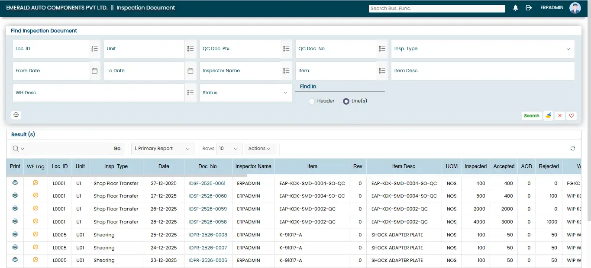
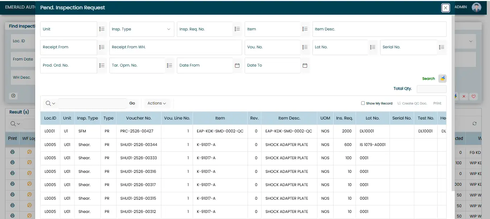
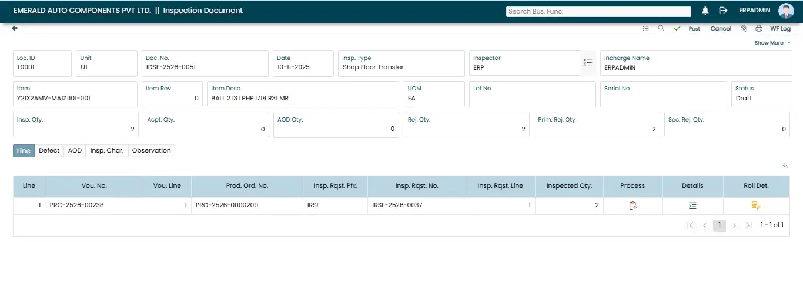
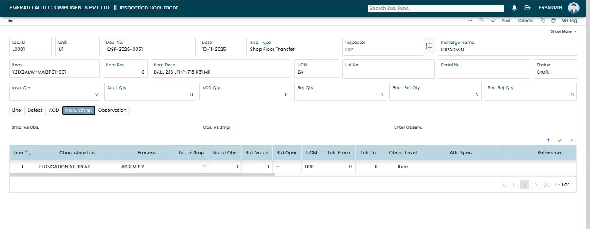
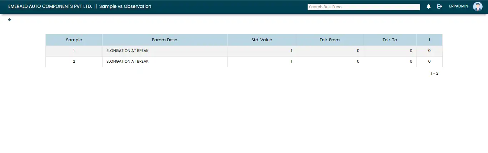
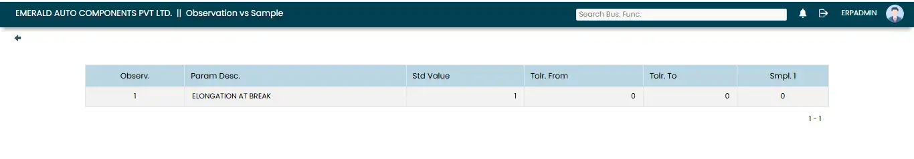
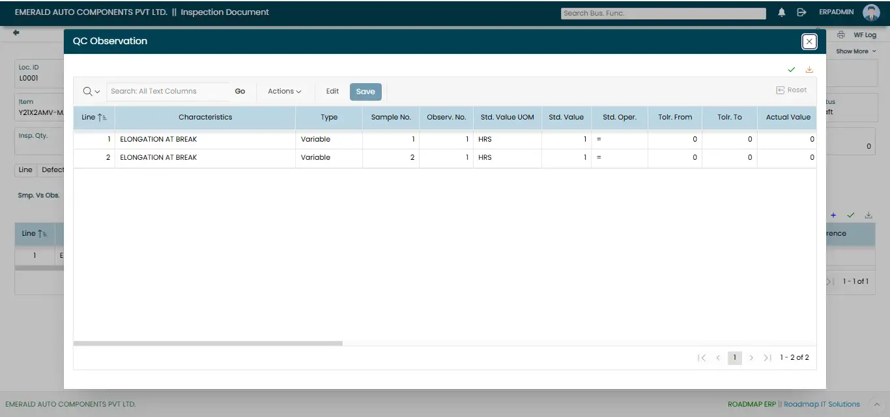
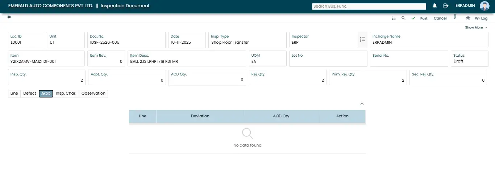
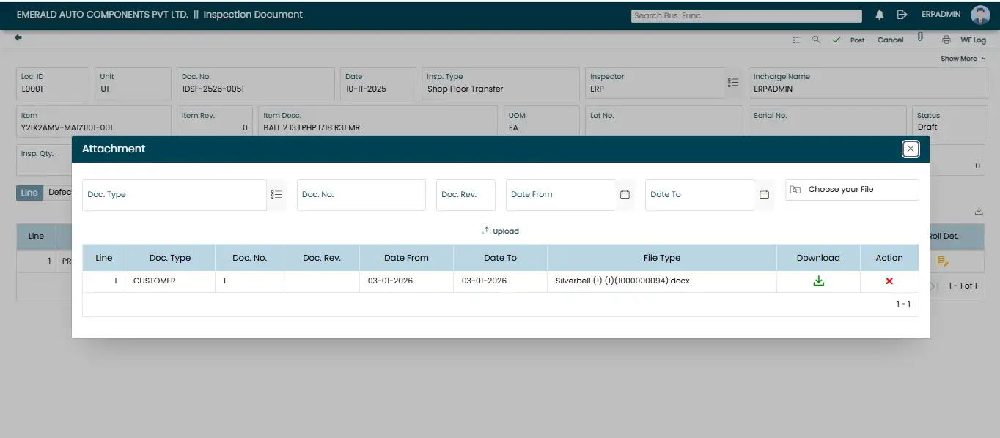
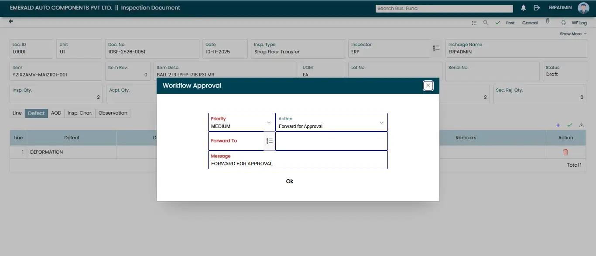

<div data-category="Quality control Management" data-title="Inspection Document" data-updated="December 01, 2025" data-contributors="RoadmapIT" data-breadcrumb="Home,Quality control Management,Inspection Document">
  <div class="page-content">
    <p>Inspection documents are converted from the Inspection created from various transactions are processed as follows</p>

    <h5>Navigation path:</h5>
    <p class="fs-6">Quality Management \ Transaction \ Inspection Document</p>
    
    <ul style="list-style-type: none; align-content: center">
      <li class="mouse-icon">Search screen displays the list of Inspection document with the relevant details and its status.</li>
      <li class="mouse-icon">User can filter the respective documents by entering the search parameters at the header.</li>
      <li class="mouse-icon">On clicking search button, system displays the results relevant to the search parameters entered.</li>
      <li class="mouse-icon">
        Using
        
        icon, entered search parameters can be cleared.
      </li>
      <li class="mouse-icon">
        To close the screen, use
        <i class="bi bi-x fs-4 mx-2 text-danger"></i>
        icon.
      </li>
      <li class="mouse-icon">
        By clicking
        <i class="bi bi-speedometer2 fs-4 mx-2"></i>
        button, yet to be processed pending inspection are displayed as shown below.
      </li>
    </ul>
    
    <ul style="list-style-type: none; align-content: center">
      <li class="mouse-icon">Filter the pending inspection details with the relevant search fields in the header.</li>
      <li class="mouse-icon">Click on Search button to view the inspection request details.</li>
      <li class="mouse-icon">Enter the Process Qty for Inspection.</li>
      <li class="mouse-icon">Select the pending inspection and click on Create QC Doc. Button to create the Inspection Document.</li>
    </ul>
    
    <ul style="list-style-type: none; align-content: center">
      <li class="mouse-icon">Inspection document is created as shown.</li>
      <li class="mouse-icon">On post button, document is sent for approval.</li>
      <li class="mouse-icon">
        The Inspection report can be run using
        <i class="bi bi-download fs-5 mx-1 text-muted"></i>
        button.
      </li>
      <li class="mouse-icon">The Inspection request can be cancelled using the Cancel button and the document is reversed to Pending Inspection screen.</li>
    </ul>
    
    <ul style="list-style-type: none; align-content: center">
      <li class="mouse-icon">If Inspection plan exists, characteristics are auto inserted.</li>
      <li class="mouse-icon">Enter the No. of Samples and No. of Observations.</li>
      <li class="mouse-icon">Click on the Smp./Obs. button and enter observation values.</li>
    </ul>
    

    <ul style="list-style-type: none; align-content: center">
      <li class="mouse-icon"> Click on the Smp./Obs.button. </li>
      <li class="mouse-icon">Enter the observation values for each sample & save.</li>
    </ul>
    
    <ul style="list-style-type: none; align-content: center">
      <li class="mouse-icon">Click on the Obs./Smp.</li>
      <li class="mouse-icon">Enter the sample observation values & save.</li>
    </ul>
    
    <ul style="list-style-type: none; align-content: center">
      <li class="mouse-icon">Observation results are displayed for Variable, Attribute and Text types.</li>
      <li class="mouse-icon">Atnd. / Not Atnd. / Obs. Not Entered.</li>
      <li class="mouse-icon">Enter the remarks if required and save it.</li>
    </ul>
    
    <ul style="list-style-type: none; align-content: center">
      <li class="mouse-icon">AOD button will be enabled if Accept on deviation quantity is entered for the line item.</li>
      <li class="mouse-icon">Enter/Select the Deviation from LOV.</li>
      <li class="mouse-icon">Enter the AOD Qty matching with AOD qty of the line item.</li>
    </ul>
    
    <ul style="list-style-type: none; align-content: center">
      <li class="mouse-icon">Under the Defects tab details of rejection quantities are entered by selecting the defect type.</li>
      <li class="mouse-icon">Select the Defect from LOV.</li>
      <li class="mouse-icon">Enter Defect Quantity.</li>
      <li class="mouse-icon">Enter the Primary and Secondary Rejection if Applicable.</li>
      <li class="mouse-icon">Enter the remarks and Save.</li>
    </ul>
    
    <ul style="list-style-type: none; align-content: center">
      <li class="mouse-icon">
        Click on
        <i class="bi bi-paperclip fs-4 mx-2"></i>
        button to attach the file.
      </li>
      <li class="mouse-icon">
        Click on
        <i class="bi bi-x fs-4 mx-2 text-danger"></i>
        button to delete the attached file.
      </li>
      <li class="mouse-icon">
        Click on
        <i class="bi bi-upload fs-5 mx-1 text-muted"></i>
        button to reload the attached file.
      </li>
      <li class="mouse-icon">
        Click on
        <i class="bi bi-download fs-5 mx-1 text-muted"></i>
        button to open the attached file.
      </li>
      <li class="mouse-icon">
        Click
        <i class="bi bi-check-lg fs-4 mx-1 text-success"></i>
        to save.
      </li>
      <li class="mouse-icon">Click post button and the document will be sent for approval.</li>
    </ul>
    
  </div>
</div>